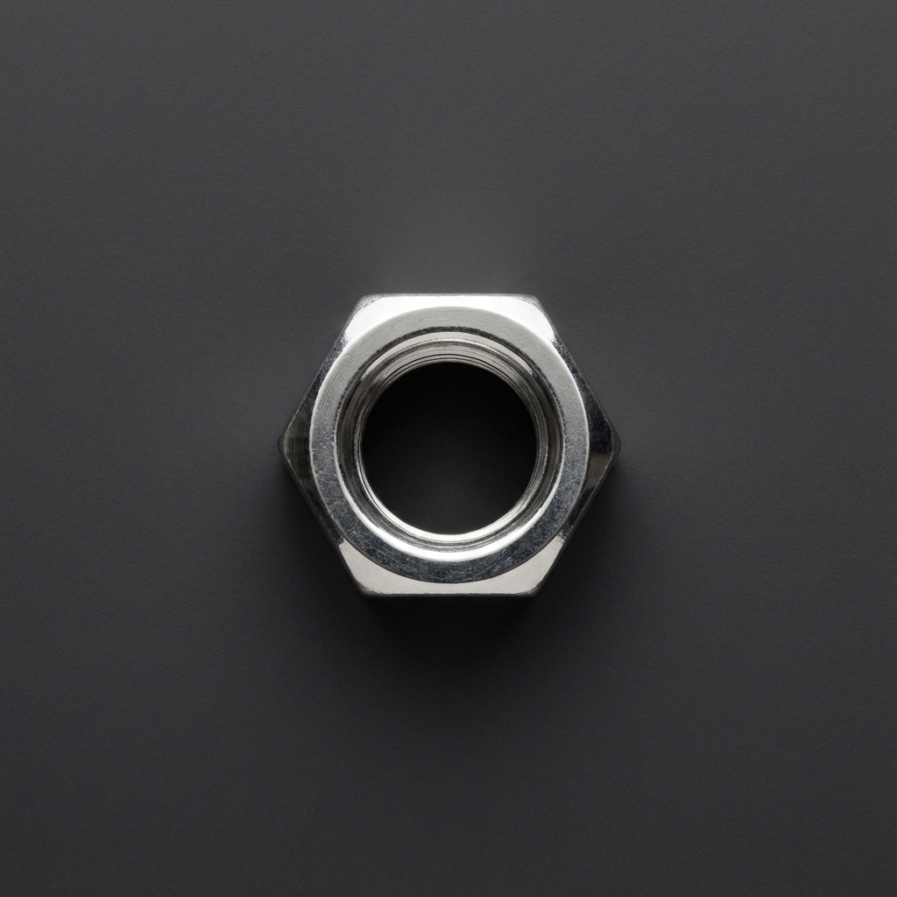
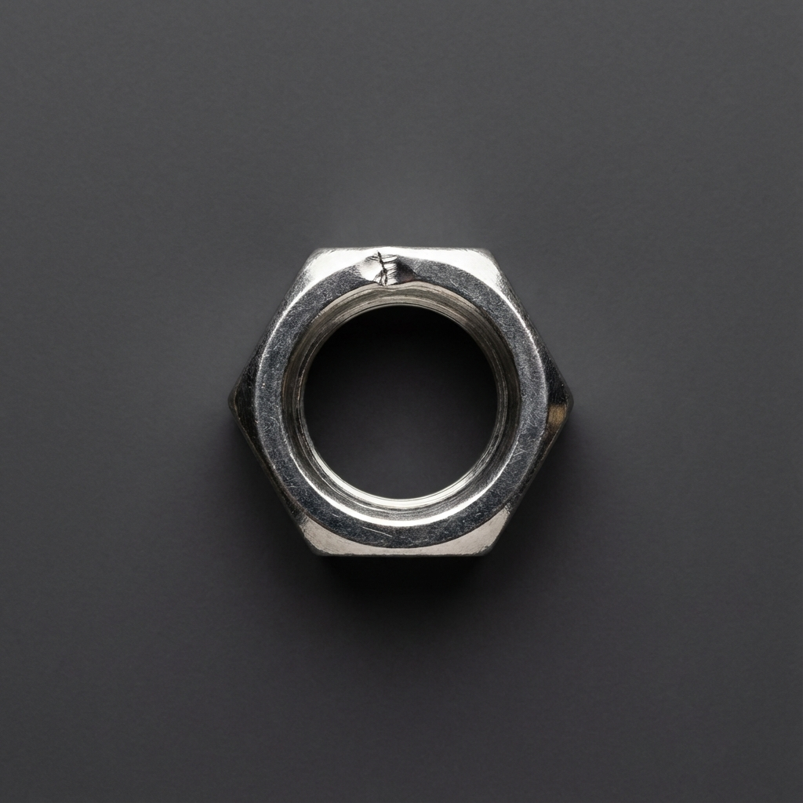
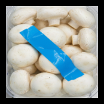
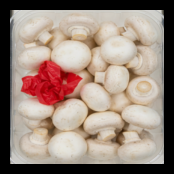
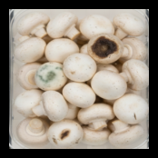
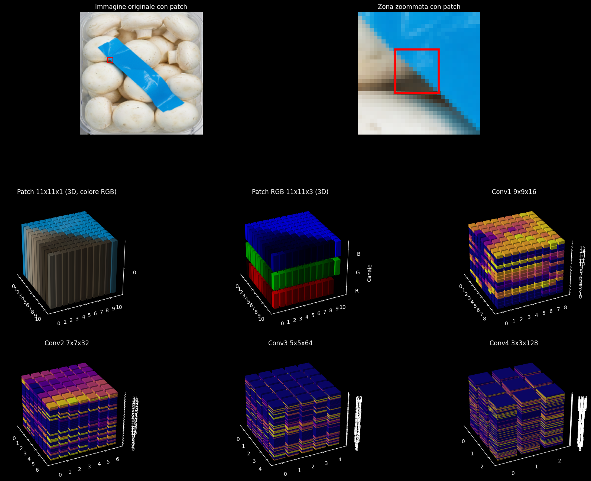
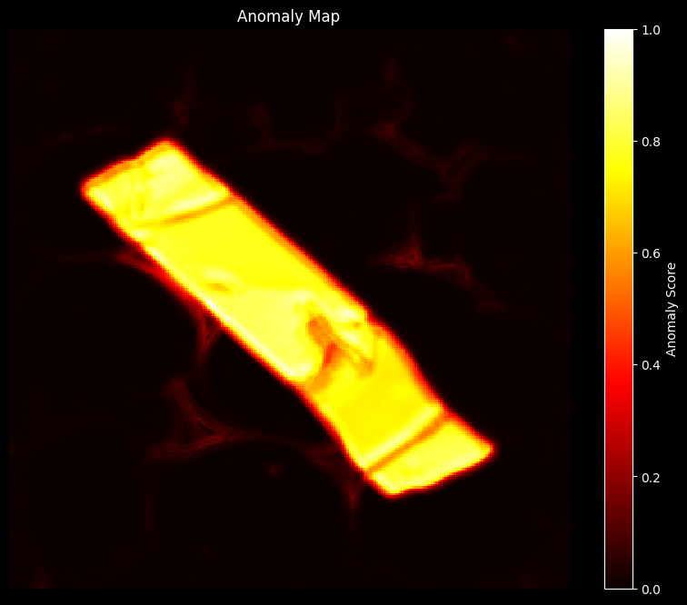
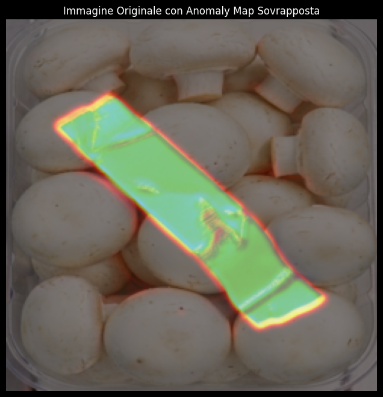
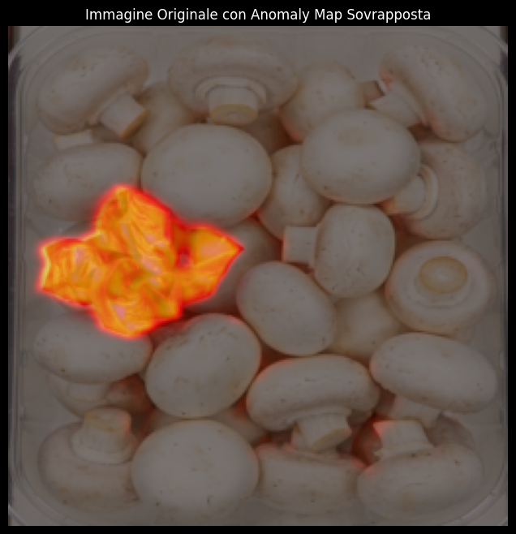
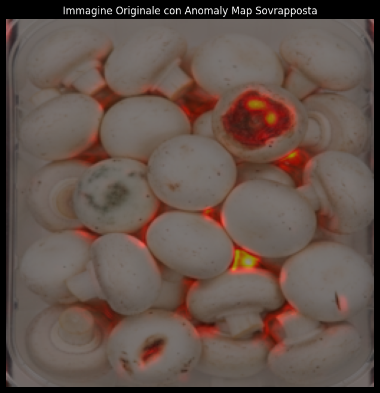

Rilevamento di Anomalie su Immagini Industriali
Rivisitazione dell'algoritmo PatchCore
(Roth et al.,
2021)
Innovazione nel controllo qualità
Studio a cura di Sebastiano De Gobbi
Presentato per Pagnan
S.r.l.
Il Problema: La Sfida dei Dati
Perché i metodi tradizionali falliscono?
- Rarità: I difetti compaiono molto raramente (es. 1 su 10.000 pezzi). Raccogliere
abbastanza esempi di "difetti" per addestrare un'AI classica è quasi impossibile.
- Varietà Imprevedibile: Un difetto può essere qualsiasi cosa: un graffio, una
macchia d'olio, un pezzo mancante, una deformazione. Non possiamo prevedere a priori come
si romperà un pezzo.
L'approccio "Unsupervised": Invece di cacciare l'imprevisto, impariamo a conoscere la
perfezione. Se conosciamo perfettamente il "normale", tutto il resto è anomalia.
Sfida Visiva: Trova l'Intruso
Tra questi 10 pezzi, uno solo è difettoso. Riesci a vederlo?


L'occhio umano si stanca. L'AI no.
La Soluzione: PatchCore
L'algoritmo PatchCore funziona come un operaio esperto.
- 1. Osserva: Guarda l'immagine pezzetto per pezzetto.
- 2. Ricorda: Ha memoria dei pezzi perfetti.
- 3. Confronta: Nota se un pezzo è nuovo/diverso.
- 4. Segnala: Identifica l'anomalia.
Generazione Dati Sintetici
Per questa dimostrazione, abbiamo utilizzato il modello multimodale NanoBanana per
generare campioni realistici.

Campione A

Campione B

Campione C
Il modello simula difetti complessi mantenendo
la coerenza strutturale del pezzo.
Come Funziona: 1. Visione
Una Rete Neurale scompone l'immagine in caratteristiche (features).

*L'immagine viene "smontata" in diversi livelli di dettaglio.*
2. L'Anomaly Map
Mappa di segmentazione basata sulla distanza nello spazio latente.
- Nero/Viola: Conforme (Basso score)
- Rosso: Incerto (Medio score)
- Bianco: Anomalia (Alto
score)

Risultati: Esempio 1
Input
Output (Sovrapposizione)

L'algoritmo evidenzia con precisione l'area anomala.
Risultati: Esempio 2
Input
Output (Sovrapposizione)

Un altro test con un difetto diverso.
Risultati: Esempio 3
Input
Output (Sovrapposizione)

Il sistema è robusto su diverse tipologie di difetti.
Conclusioni e Sviluppi Futuri
- 🧠 Backbone CNN: Attualmente usiamo una rete non allenata specificamente. Un
fine-tuning sul dominio industriale aumenterebbe drasticamente le performance.
- 📊 Dataset: Questo PoC usa solo 7 immagini "good". In produzione, scalando a
migliaia di campioni, la robustezza del modello sarà totale.
- ⚡ Hardware: Le risorse di calcolo sono cruciali. Con GPU dedicate possiamo
abbattere la latenza (<10ms) e aumentare la risoluzione di analisi.
Il potenziale di miglioramento
è enorme.